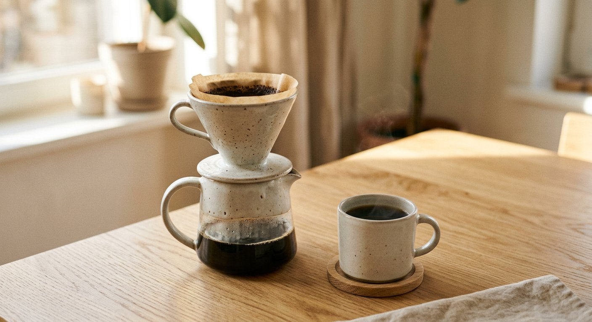
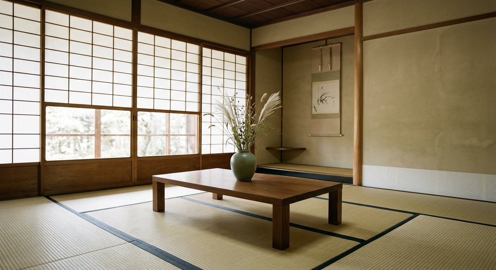

Featured Stories
精選生活日誌
- 紙筆
- 書寫
寫給自己的一頁：我的手帳哲學
不追求完美的排版，只保留最真實的一天。手帳不是任務清單，而是一面安靜的鏡子。
閱讀約 4 分鐘

- 居家
- 侘寂
留白的房間：如何用一張矮桌改變生活節奏
少即是多並非口號。從整理一張桌子開始，我們的注意力與身心都能找到更舒服的位置。
閱讀約 5 分鐘
Curated Moodboard
靈感相簿
旅途中遇見的光、質地與寂靜。點擊任一張作品可放大檢視。
Featured Stories

不追求完美的排版，只保留最真實的一天。手帳不是任務清單，而是一面安靜的鏡子。
閱讀約 4 分鐘

少即是多並非口號。從整理一張桌子開始，我們的注意力與身心都能找到更舒服的位置。
閱讀約 5 分鐘
Curated Moodboard
旅途中遇見的光、質地與寂靜。點擊任一張作品可放大檢視。